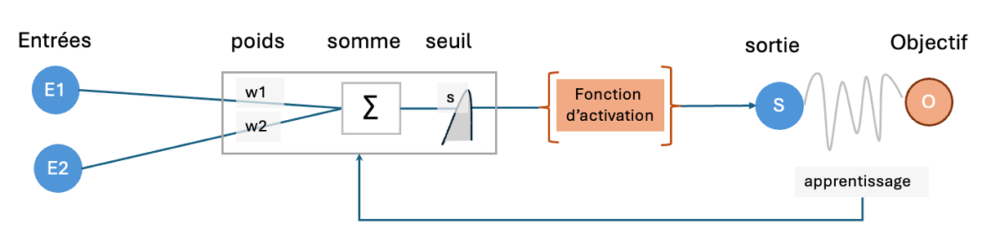
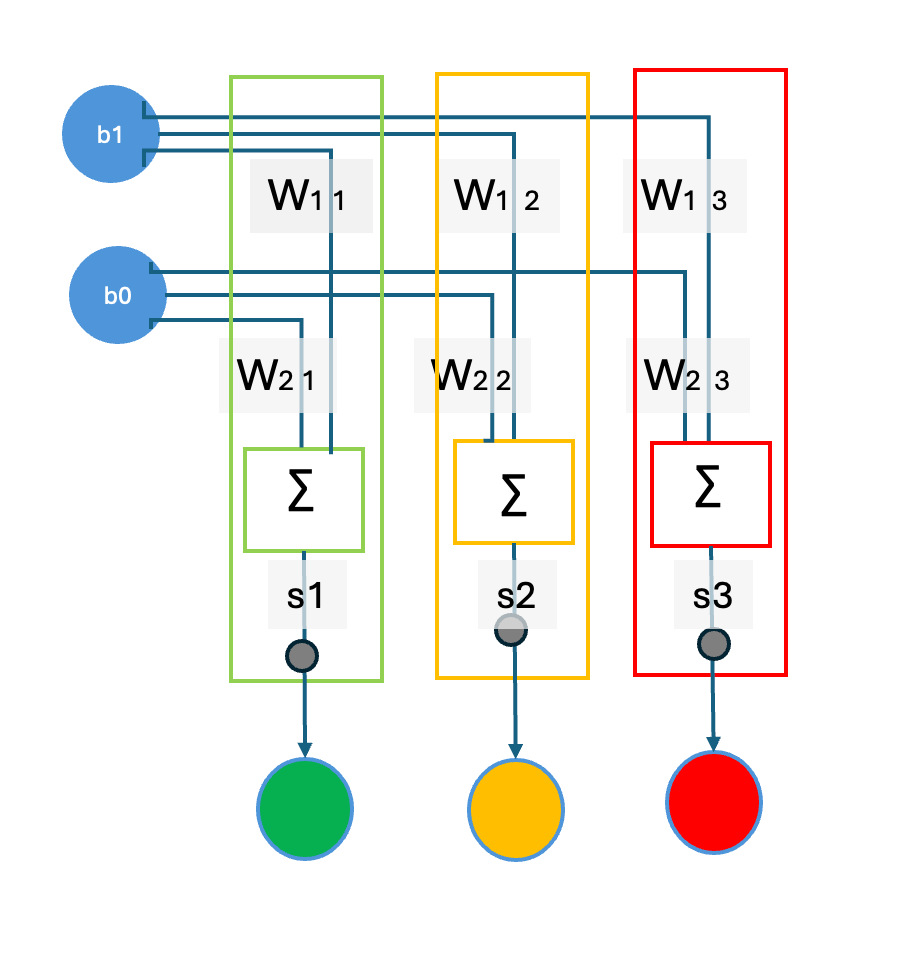

Un neurone biologique ne s'active que si ses stimulations reçues
(par ses dendrites) et cumulées (dans son corps cellulaire)
franchissent son seuil d'excitation.Il transmet ensuite un
signal en aval (par son axone).
Les neurones sont interconnectés et forment des réseaux de
neurones.
Ces réseaux sont capables d'apprendre à partir
d'exemples, ce qui est la base de l'intelligence artificielle.
Un neurone artificiel reproduit la logique d'un neurone biologique par des calculs simples : les stimulations des entrées sont pondérées, puis cumulées et le résultat est comparé à un seuil par une fonction d'activation.

Schéma d'un neurone à deux entrées
Un neurone avec une fonction d'activation H (de Oliver Heaviside
son inventeur) est un perceptron.
Sa formule est :
S = H(w1·x1 + w2·x2 − s) pour 2
entrées.
Sa fonction d'activation
H fonctionne en tout ou rien :
sortie à 1 si le résultat du calcul est positif (ou nul), 0
sinon.
Géométriquement, la formule précédente est
une droite dans un plan qui sépare l'espace entre les
points calculés à 1 de ceux à 0.
Pour 3 entrées, ce serait un plan qui découpe l'espace à trois
dimensions.
Au delà, les calculs restent les mêmes mais ce n'est plus
représentable directement.
À partir d'un compteur, on veut un modèle IA qui allume chaque feu selon la valeur (binaire) d'un compteur :
| compteur | entrée binaire b1b0 | sortie visée |
|---|---|---|
| 0 | 00 | aucun feu |
| 1 | 01 | feu vert allumé seul |
| 2 | 10 | feu orange allumé seul |
| 3 | 11 | feu rouge allumé seul |
Un neurone ne produit qu'une seule sortie, il en fautdonc un pour
chaque feu afin de former un réseau de trois neurones.
Avec 2 entrées et 3 sorties, sa matrice de poids est de 2×3 et
le vecteur des seuils est de dimension 3.
C'est un réseau à 9 paramètres (6+3)

Représentation des 3 neurones du réseau feu tricolore
Notre réseau monocouche a une dizaine de paramètres et ne peut
pas gérer des situations plus complexes, mais il est suffisant
pour illustrer le fonctionnement d'un réseau de neurones.
À titre de comparaison, les réseaux de neurones profonds
utilisés pour la reconnaissance d'images ont des millions
(106) de paramètres et des dizaines de couches.
Les grands
LLM (Large Language Model) comme
ChatGPT ou Mistral ont des centaines de milliards
(1012) de paramètres et des centaines de couches.
Le fonctionnement de base reste le même, mais avec des
complexités de plus en plus grandes.
On effectue des milliards d'opérations mathématiques en multipliant
une matrice de poids par un
vecteur d'entrées.
C'est typiquement le domaine de calcul des
GPU(Graphic Process Unit) d'où la
course à ces équipements.
On a créé une interface visuelle pour voir le réseau de pilotage des feux tricolores en action.
Une représentation graphique des trois droites dans le plan montre la discrimination réalisée par le réseau.
Vous pourrez jouer le rôle de l'entraineur et ajuster vous-même les poids et seuils jusqu'à obtenir un succès.